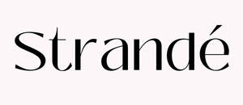

Trade Mark Journal No.2025/018 2 May 2025
UK00004188453 14 April 2025 (3,35,41,44)
Mark 1
Strandé
Mark 2

Mark 3
Strande
- Class 3
- Hair care preparations; non-medicated hair treatments; hair masks; hair serums; hair oils; hair mists; hair perfumes; hair styling preparations; hair gels; hair waxes; hair creams; hair lotions; hair sprays; dry shampoos; shampoos; conditioners; leave-in conditioners; scalp care preparations; scalp exfoliators; scalp oils; scalp serums; scalp tonics; scalp mists; non-medicated scalp treatments; hair tonics; anti-frizz products; heat protection sprays; volumising sprays; curl creams; detangling sprays; shine sprays; hair texturisers; hair thickening products; hair smoothing treatments; colour-protecting preparations; UV protection sprays for hair; beard oils; beard balms; cosmetic preparations for the hair and scalp; non-medicated skin care preparations; body oils; body lotions; face mists; facial oils; facial toners; cleansing oils; cleansing balms; moisturisers; cosmetic creams; beauty balms; exfoliants; face masks; lip balms; essential oils; non-medicated bath and shower preparations; fragrance sprays for cosmetic use; perfumed oils.
- Class 35
- Retail services relating to hair care products; retail services relating to cosmetics; online retail services connected with the sale of hair care products; online retail services connected with the sale of cosmetics; wholesale services for hair care and cosmetic goods; retail store services featuring beauty and hair products; e-commerce services relating to the sale of hair and beauty products; product marketing; digital marketing services; social media marketing; influencer marketing services; business consultancy in the field of haircare and cosmetics; brand strategy services; business development services; online business networking services; promotional services; advertising services; content creation for advertising purposes; online advertising; promotional content distribution services; business management of influencers; business advice relating to product launches.
- Class 41
- Educational services relating to hair and beauty; providing online non-downloadable videos and tutorials in the fields of haircare, beauty, and business; training services for hair and beauty professionals; business coaching for salon owners and beauty entrepreneurs; providing online courses; conducting workshops; hosting webinars; publishing of electronic books and guides; downloadable digital educational resources; production of educational video content; mentoring services; educational consultancy; organising online masterclasses; presentation of online education via social media platforms.
- Class 44
- Hair treatment services; scalp treatment services; scalp exfoliation services; hair restoration treatments; trichology consultations; hair and scalp health consultations; application of hair care preparations; application of scalp care preparations; beauty salon services; hair salon services; advice and consultancy relating to the use of hair care and scalp care products; non-medical scalp therapy; holistic hair and scalp wellness treatments.
Cld Hair Co. Ltd